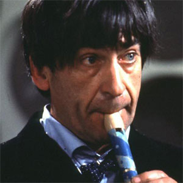

|
|||||||||||||||||||||
|
The Second DoctorPortrayed by: Patrick TroughtonThe Second Doctor is the second incarnation of the protagonist of the long-running BBC television science fiction series Doctor Who. He was portrayed by character actor Patrick Troughton. Within the series' narrative, the Doctor is a centuries-old Time Lord alien from the planet Gallifrey who travels in time and space in his TARDIS, frequently with companions. When the Doctor is critically injured, he can regenerate his body; in doing so, his physical appearance and personality change. The transformation into the Second Doctor (originally referred to as a "renewal"), a figure who was the same 'essential' character as the first but with a very different persona, was a turning point in the evolution of the series, and eventually became a critical element of the series' longevity. |
||||||||||||||||||||